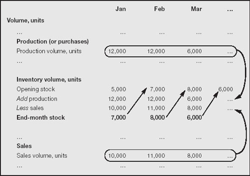

Inventory
Products coming into your inventory in, say, July might not be sold until November. The acquisition is recorded in July, the product lives in your showroom or storeroom (and, incidentally, on the balance sheet) for five months, and then it is shipped out (at which time the appropriate amount is charged to cost of sales). Figure 13.4 shows the mechanics. This can become quite complex, when you have inventory of raw materials, components, work-in-progress and finished goods – for many product lines.
Fig 13.4. Tracking inventory

The book value of inventory can include shipping and handling costs. For work-in-progress and finished goods, you apportion raw material and production costs and overheads. Where warehousing is a significant factor – for example, when you are aging wine and whisky – those too can be counted as part of the cost of inventory.
However, the lags between acquisition (purchase or manufacture) and sales raise a timing problem. How do you value inventory if:
unit costs are changing over time; and
you do not or cannot match specific units of product to specific sales.
This is not as simple as it might sound. Four ways that bean counters cope are discussed next.
What’s in store?
There are various methods of valuing inventory, including the following:
1. | Specific unit costs (also called specific identification) matches exactly the origin of each unit of your product and journey into, through and out of inventory. This is the purest method of valuation, but it cannot be used when units of your product are indistinguishable from each other (grain, paint, talcum powder). The International Accounting Standards Board prefers specific costs for inventory valuation. If this is not applicable, FIFO or weighted averaging can be used. The original standard also grudgingly allowed LIFO. In a 2003 revision of IAS2, which covers inventories, LIFO was expressly disallowed. |
2. | Averaging (also called weighted averaging) is where each unit of inventory is measured by:
|
3. | First-in first-out (FIFO) tracks costs and assumes that the earliest items put into stock are the first ones removed. This is a situation where an accounting concept matches real-life common sense. |
4. | Last-in first-out (LIFO) tracks costs but assumes that the latest items put into stock are the first ones removed. (Unfortunately, this is similar to my document filing system.) |
When stock acquisition costs are rising (perhaps due to inflation), FIFO boosts the value of your closing stock. When prices are falling (such as with many high-tech items and some commodities), LIFO produces a higher valuation for the cost of goods sold and a lower value for closing stock. Figure 13.6 contrasts the effect of using FIFO and LIFO in a computer business where production costs are falling over time.
Companies sometimes use a mix of these valuation methods for various categories of inventory. By and large, the first two or three techniques are preferable for analytical purposes. The second two may be more advantageous for tax reasons. Higher costs results in lower gross and net profits. LIFO results in the lowest tax bill, and is popular in the US even though it is not accepted by some tax authorities (for example, in certain European countries) and some accounting standards authorities.
|
| Clearly, inventory valuation is an example of where the books can be manipulated even when no money is changing hands. |
|